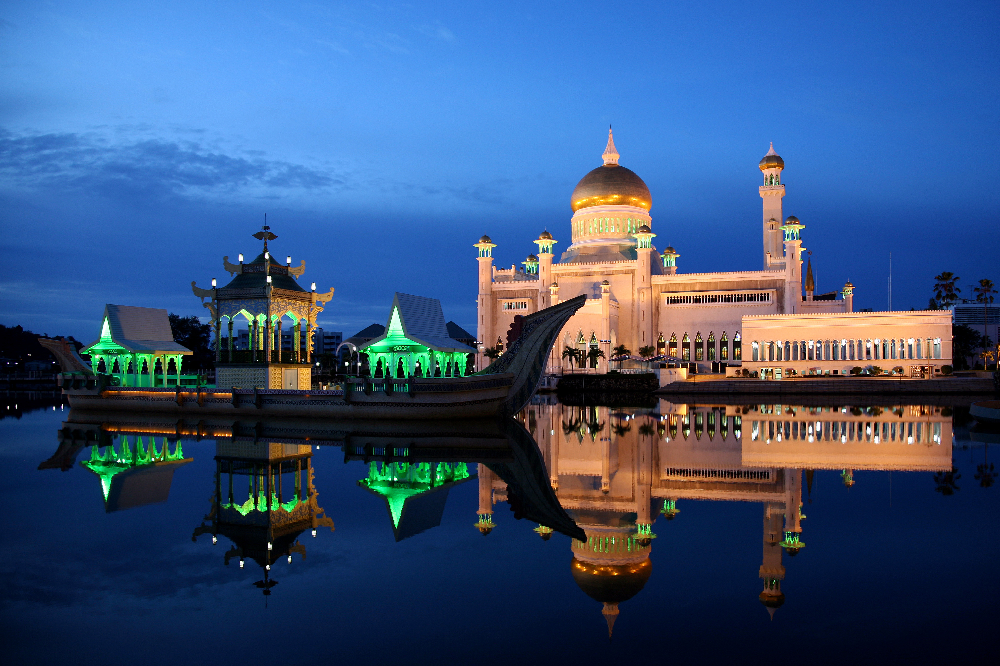
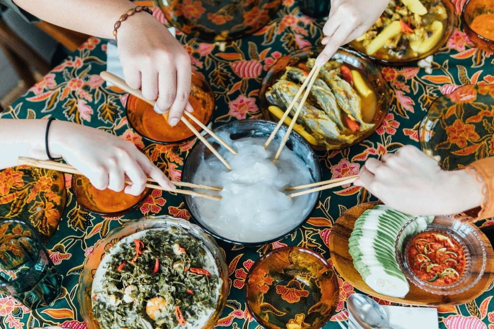
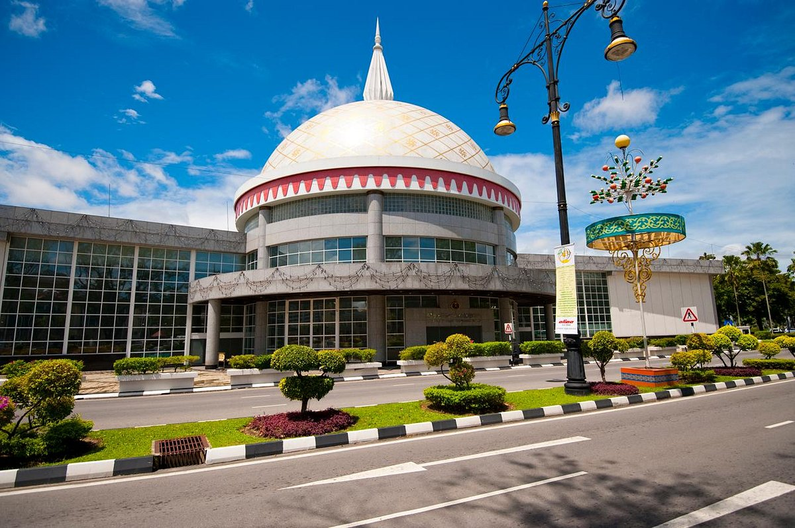

Omar Ali Saifuddien Mosque
Located in the heart of Bandar Seri Begawan, this famous mosque is recognised for its elegant architecture, golden dome and peaceful surroundings.
DISCOVER BRUNEI'S HERITAGE
Discover the traditions and stories of Brunei.
Brunei's culture is shaped by its history, traditions and strong sense of community. From beautiful landmarks to traditional food and local customs, discover what makes Brunei unique.

Located in the heart of Bandar Seri Begawan, this famous mosque is recognised for its elegant architecture, golden dome and peaceful surroundings.

Known as the Water Village, Kampong Ayer is a historic settlement built along the Brunei River. It offers a glimpse into traditional life in Brunei.

Experience the flavours of Brunei through local favourites such as ambuyat, nasi katok and traditional kuih.

Discover Brunei's history, heritage and traditions through its museums and cultural experiences.